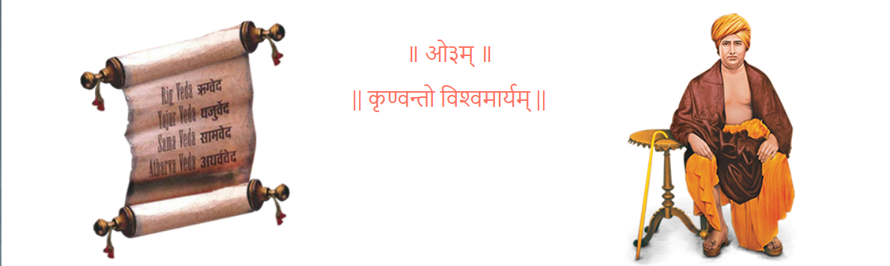
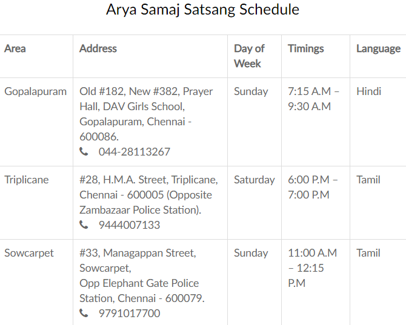

ARYA SAMAJ | ‘BACK TO VEDAS’ Inspiration behind D.A.V. (Dayanand Anglo Vedic) movement  Arya Samaj (“Noble society”) is a movement that promotes values and practices based on the infallibility of the Vedas. It is not a separate religion by itself, but rather aims to ensure that all human beings lead a righteous life in accordance with the ‘Vedic’ principles. It was founded by Maharishi Swami Dayanand Saraswati in April 1875 as a secular movement, more to unify like-minded individuals (irrespective of caste, creed, religion, gender) under a common umbrella. Vedas are universally accepted as the oldest scriptures (known to be present since beginning of mankind) and are in a way a ‘User Manual’ prescribing how human beings should lead their lives. All ‘religions’ followed across the world today are only a few thousand years old. They emerged relatively recently considering that humans have existed for more than a million years. The word ‘Hindu’ indeed was coined only about 3,000 years ago (referring to people living towards the East of the famous river ‘Indus’). Arya Samaj thus propagates the message – ‘Back to Vedas’, which is based on core values of Knowledge, Equality & Recognizing One Supreme Force, i.e. God. Arya Samaj also recognizes that there are multiple interpretations of the Vedic texts, some of them directly in conflict with each other. Swami Dayanand Saraswati therefore outlined certain key aspects which form an integral part of the Vedic philosophy. There is One Supreme Almighty. He is One and can be referred by any name as each denotes one of His qualities. However, His primary name is AUM (as mentioned in Yajur Veda). We can worship Him from anywhere as He is formless. This thought becomes even more relevant in today’s context when the world is deeply divided over different religions. Emphasizes Equality of all human beings. Completely dismisses casteism which is based on birth. Instead promotes merit based opportunity for all. Encourages everyone to study the Vedas, without any caste or gender based discrimination. Advocates simple rituals (also economical), focusing more on the meaning of the mantras. Advocates performance of Yajna, i.e. Agnihotra for purification of the atmosphere, addressing the challenge of pollution. Promotes ‘Ahimsa’, i.e. Non-violence. Condemns all kind of cruelty or exploitation of animals. Following five aspects if adopted daily is true worship – (i) Meditation; (ii) Agnihotra, i.e. Yajna; (iii) Respecting parents, teachers & other elders; (iv) Respecting scholars & guests; (v) Being compassionate towards animals & other living beings. Also, in the Vedic Tradition, there are sixteen ceremonies known as Sanskars or the Sacraments of Life. Refer http://www.aryasamaj-vadodara.org/the-16-sanskar. The more prominent ones are Vivah (Marriage), Antyeshti (Cremation), Namakaran (Naming ceremony), Upanayan (Thread ceremony). The Sanskars are performed for the physical, social, and spiritual development of the individual. Arya Samaj, Chennai, has priests who perform these 16 Sanskars. They also perform the rituals for other occasions like Grihapravesh (House warming) and Shanti Homam for general well-being. You can get in touch with the Arya Samaj office if you wish to make a booking for performance of any rituals at your residence or office. Arya Samaj, the inspiration behind DAV Group of schools, has an office at Ist Floor, # 383 Avvai Shanmugam Salai, Gopalapuram , Chennai 600086. Landmark: Adjacent to DAV Girls School, Gopalpauram. (Above Punjab National Bank branch). Timings – 10 a.m. to 4 p.m. You can also spend time browsing through the Vedic literature in the small library at the office. To know more, visit: www.aryasamajchennai.org. Regular satsangs are held every week based on following schedule. All are welcome to join. 
THANK YOU